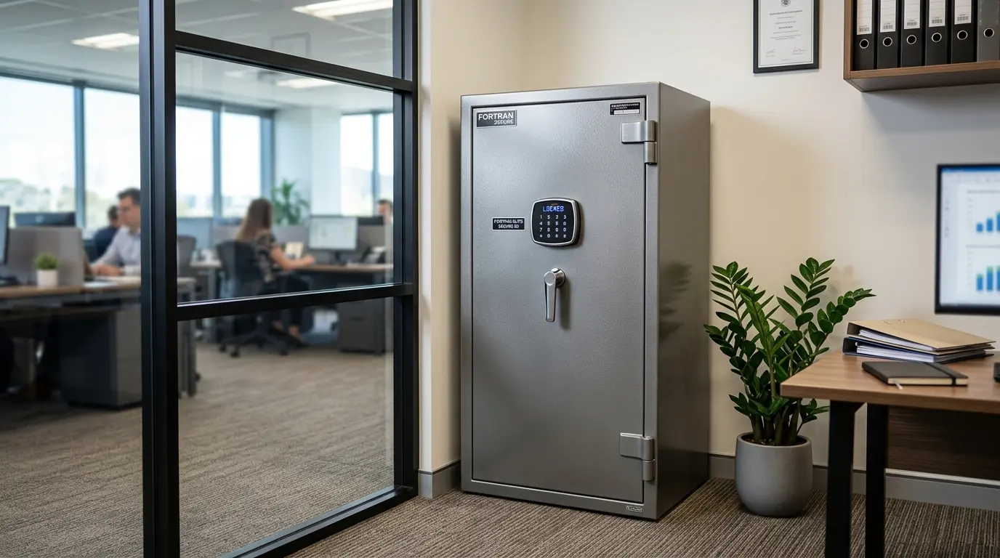

Mengapa Setiap Perusahaan Membutuhkan Brankas Dokumen Tahan Api Terbaik?
Menggunakan brankas dokumen tahan api terbaik di area perkantoran merupakan investasi krusial untuk melindungi arsip vital perusahaan dari bahaya kebakaran tak terduga. Sertifikat tanah, akta pendirian usaha, kontrak kerja sama nilai besar, hingga Laporan Keuangan Audit adalah aset tak ternilai yang dapat melumpuhkan operasional bisnis jika musnah terbakar.
Banyak pemilik usaha beranggapan bahwa lemari besi atau filing cabinet standar sudah cukup kuat menahan kobaran api. Padahal, baja biasa tanpa insulasi thermal khusus justru bertindak sebagai konduktor panas yang sangat cepat mematangkan dan mengarangkan kertas di dalamnya hanya dalam kurun waktu beberapa menit.
Berdasarkan Laporan Riset Penanggulangan Kebakaran Komersial 2026, lebih dari 68 persen perusahaan yang kehilangan dokumen fisik utama akibat kebakaran mengalami kesulitan pemulihan bisnis secara signifikan dalam jangka waktu dua tahun. Oleh karena itu, pengadaan brankas khusus berstandar insulasi tinggi menjadi pilar keamanan fisik yang mutlak diperlukan.
Selain menjaga berkas dari suhu panas luar biasa, penyediaan brankas bermutu tinggi juga melengkapi ekosistem tata kelola arsip gedung. Jika kantor Anda sedang memperkuat aspek keamanan dokumen dan pengadaan sarana fisik, tim pakar kami siap membantu menyediakan ragam opsi unit penyimpan resmi dan Perlengkapan Kantor terbaik.
- Kertas biasa mulai mengalami reaksi pirolisis (berasap & hancur) pada suhu 177°C (350°F).
- Suhu rata-rata kebakaran gedung perkantoran bisa mencapai 800°C hingga 1000°C dalam waktu 15 menit.
- Brankas tahan api dirancang melepaskan uap air terkunci dari bahan insulasi untuk meredam suhu ruang dalam.
Bagaimana Memahami Standar Sertifikasi Ketahanan Api (UL 72, JIS, EN 1047)?
Kunci utama dalam memilih brankas dokumen tahan api terbaik adalah memeriksa stiker sertifikasi resmi yang diterbitkan oleh laboratorium penguji independen. Sertifikasi ini memberikan jaminan bahwa unit brankas telah diuji secara nyata dalam tungku pemanas ekstrem selama durasi tertentu.

Pengujian sertifikasi standar internasional ketahanan api (UL 72 / JIS) — kunci utama menjamin dokumen internal brankas terlindungi dari kebakaran.
Beberapa standar sertifikasi internasional yang diakui secara global meliputi:
- UL 72 Class 350 (Underwriters Laboratories, USA) — Standar paling bergengsi yang menjamin suhu internal brankas tidak akan melebihi 177°C (350°F) ketika diuji pada suhu luar 1010°C selama 1 jam, 2 jam, atau 4 jam.
- JIS S 1037 (Japanese Industrial Standards) — Uji ketahanan api khas Jepang yang mengukur batas aman suhu internal kertas dan ketahanan terhadap goncangan jatuh dari ketinggian.
- EN 1047-1 (European Standard) — Standardisasi ketat Eropa yang mencakup uji kejut panas (thermal shock test) dan uji jatuh dari lantai bertingkat.
- Pastikan terdapat plat atau sertifikat tembaga asli dari lembaga sertifikasi pada bagian dalam pintu brankas.
- Jangan terkecoh oleh klaim pabrikan tanpa menyertakan dokumen pengujian resmi laboratorium.
- Pilih kelas waktu minimal 1 Jam (60 menit Fire Rated) untuk gedung kantor dengan proteksi damkar perkotaan.
Apa Saja Bahan Insulasi Thermal dan Konstruksi Dinding Brankas Kantor?
Ketahanan brankas dokumen tahan api terbaik berakar pada formulasi insulasi di antara dinding luar dan dinding dalam baja. Brankas modern tidak hanya mengandalkan lempengan besi padat, melainkan memanfaatkan kombinasi bahan kimia khusus peredam panas.
Konstruksi dinding brankas yang andal biasanya terdiri dari:
- Campuran Semen Komposit Seluler (Insulite) — Bahan insulasi kaya kandungan molekul air kristal yang akan menyerap panas dan berubah menjadi uap pelindung saat kebakaran terjadi.
- Sistem Celah Pintu Kedap Udara (Intumescent Door Seal) — Karet seal khusus di sekeliling bingkai pintu yang akan mengembang hingga berkali-kali lipat saat terkena suhu tinggi, menutup rapat celah dari asap, panas, dan semprotan air pemadam.
- Baja Tahan Dobrak (Reinforced Anti-Drill Steel) — Lapisan plat baja manganese yang melindungi mekanisme kunci dari percobaan bor mekanis maupun congkelan paksa.
Bagaimana Memilih Sistem Pengunci: Manual Combo vs Digital Biometrik?
Selain faktor tahan panas, keandalan brankas dokumen tahan api terbaik juga diukur dari sistem penguncian keamanan fisiknya. Setiap tipe kunci memiliki keunggulan operasional tersendiri sesuai dengan profil pengguna di kantor Anda.
| Jenis Kunci | Keunggulan Utama | Pertimbangan / Catatan |
|---|---|---|
| Kunci Kombinasi Putar (Dial Lock) | Sangat awet, tanpa listrik/baterai, tahan lama puluhan tahun. | Membutuhkan ketelitian saat memutar kode kombinasi angka. |
| Kunci Digital Keypad (PIN Code) | Praktis, cepat dibuka, kode PIN mudah diganti berkala. | Memerlukan pergantian baterai rutin dan perlindungan baterai cadangan. |
| Kunci Biometrik Fingerprint | Keamanan tertinggi, otentikasi cepat dengan sidik jari pengguna. | Harganya relatif lebih tinggi dan tergantung ketersediaan daya listrik/baterai. |
Untuk perlindungan maksimal, sangat disarankan menggunakan sistem Dual Lock yang menggabungkan kunci kombinasi (digital/putar) dengan kunci pas fisik master.
Bagaimana Menentukan Ukuran dan Kapasitas Brankas yang Tepat untuk Dokumen?
Kesalahan umum saat membeli brankas dokumen adalah memilih kapasitas yang terlalu pas dengan jumlah berkas saat ini. Mengingat dokumen korporat terus bertambah setiap tahunnya, pilihlah ukuran brankas dengan kapasitas 20-30% lebih besar dari kebutuhan saat ini.
Pastikan bagian dalam brankas dirancang dengan baki (tray) adjustable atau drawer khusus yang dapat menampung ukuran dokumen standar Indonesia seperti F4/Folio dan A4 tanpa perlu melipatnya.
- Posisikan brankas di lantai beton padat yang mampu menopang beban berat (200 kg - 500+ kg).
- Lakukan perlindungan anchoring (dynabolt) ke lantai beton agar brankas tidak dapat diangkat oleh pencuri.
- Lengkapi sarana ruang arsip Anda dengan perangkat proteksi tambahan dan sarana Perlengkapan Kantor pendukung.
Pertanyaan Populer Seputar Brankas Dokumen Tahan Api (FAQ)
Kesimpulan Praktis
Menginvestasikan sarana kantor pada brankas dokumen tahan api terbaik adalah langkah fundamental dalam memproteksi aset hukum dan finansial perusahaan dari ancaman musibah kebakaran. Pastikan Anda memilih brankas dengan sertifikasi standar internasional, bahan insulasi thermal komposit, serta sistem dual lock berkeamanan tinggi.
Lengkapi sistem tata kelola arsip gedung kantor Anda dengan memesan paket Perlengkapan Kantor dari kami sekarang juga untuk penawaran harga korporat terbaik!

Penulis: Ardhana Prasasta
Spesialis konten & konsultan furnitur tata ruang kantor di Perlengkapan Kantor. Berpengalaman dalam memberikan panduan solusi ergonomis, efisiensi ruang kerja, dan pengadaan perlengkapan kantor korporat.